The 587Ah energy storage system is becoming an important direction for technological upgrading in the energy storage industry. Since 2025, as the new energy power market accelerates into "comprehensive marketization". At this stage, the energy storage industry is shifting from policy dividend-driven to a market-oriented game with economy, reliability and safety as the core.
This article aims to comprehensively analyze the performance of the 587Ah energy storage system under different technical routes, evaluate its applicability in various application scenarios such as home energy storage, industrial and commercial energy storage, and grid-level energy storage, deeply analyze the cost composition and market development trends, and conduct a comparative analysis of the products of major suppliers. The research will provide a comprehensive technical decision-making reference for investors, system integrators and end-users in the energy storage industry.
Technical Specifications and Standards of 587Ah energy storage system
Definition and standardization of 587Ah specification
587Ah refers to the capacity specification of the battery, usually used with a nominal voltage of 3.2V, and the energy of the unit reaches the level 1.878kWh. 587Ah is not a standardized specification in the traditional sense, but a new generation of energy storage cell capacity concept first proposed and promoted by CATL . The birth of this specification stems from the systematic thinking of the full life cycle performance of energy storage systems, and the multi-objective optimization algorithm accurately deduces that 587Ah is the optimal balance between system integration efficiency and cost.
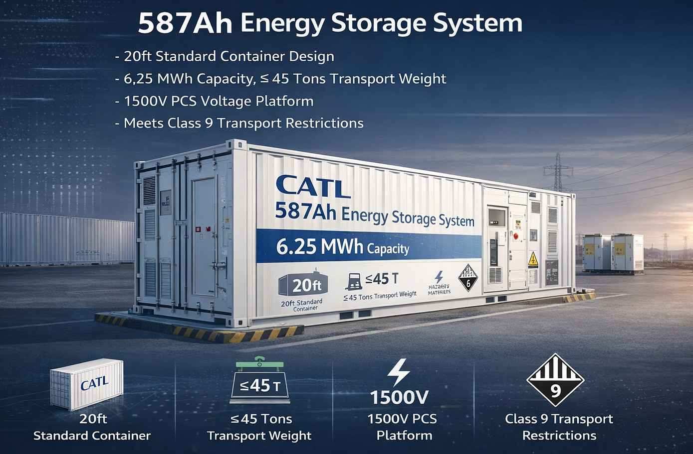
From the perspective of technical definition, the core features of the 587Ah energy storage system include: based on 20ft, the standard container design is suitable for 1500V PCS voltage platform, and the capacity of a single container is 6.25MWh, the weight of the whole container is strictly controlled 45 tons or less, which meets the transportation restrictions of domestic dangerous goods transportation on Class 9 containers.
587Ah product parameters of lithium battery technology route
In the lithium battery technology route, 587Ah products mainly use lithium iron phosphate (LiFePO4) because they have significant advantages in safety, cycle life and cost control, and are more suitable for large-scale energy storage application scenarios.
The core technical parameters of CATL 587Ah lithium iron phosphate battery cells perform excellently:

Haichen Energy Storage ∞ Cell 587Ah lithium iron phosphate battery cell Differentiated advantages in some parameters:
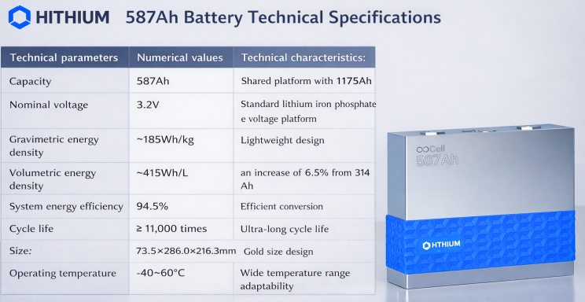
From the perspective of technical comparison, CATL and HiTHIUM Energy Storage 587Ah products are consistent on the capacity and voltage platforms, but there are slight differences in specific design parameters. CATL's volumetric energy density reached 434Wh/L, slightly higher than Haichen Energy Storage's 415Wh/L, and performed better in terms of cycle life, reaching more than 11,000 times, which was significantly higher than the 8,000 times of CATL.
Comparative analysis of core performance indicators
The 587Ah energy storage system has significant advantages over traditional energy storage technology in terms of core performance indicators, which are mainly reflected in key dimensions such as energy density, conversion efficiency, cycle life, and safety.
Energy density advantage: The volumetric energy density of 587Ah lithium iron phosphate battery cell reaches 415-434Wh/L, which is an increase compared to the traditional 314Ah battery 6.5%-10%. This improvement is not only reflected in the single cell level, but more importantly, it brings a 25% increase in energy density at the system level.
Conversion efficiency improvement: The initial energy conversion efficiency of the 587Ah cell (RTE) to 96.5% and achieve slow decay throughout the life cycle. The energy efficiency of Haichen Energy Storage's 587Ah product system reaches 94.5%, Significantly improve energy utilization efficiency and reduce energy loss.

Extended cycle life: The cycle life of mainstream 587Ah products reaches 8000-11000 times, far exceeding the 3000-5000 times level of traditional energy storage batteries. Through material innovation and process optimization, some products such as Ganfeng Lithium Battery's 587Ah battery cells can even reach 15,000 Secondary cycle life.
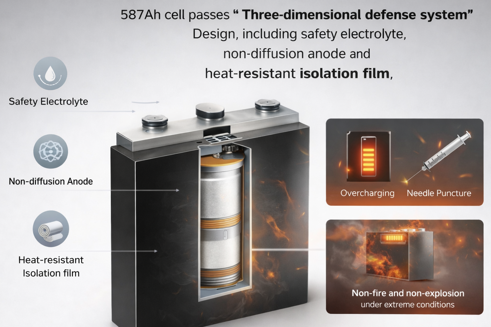
Safety Enhancement: 587Ah cell passes "Three-dimensional defense system" Design, including safety electrolyte, non-diffusion anode, and heat-resistant isolation film, to achieve non-fire and non-explosion under extreme conditions such as overcharging, thermal runaway, and needle puncture. At the same time, through the winding process design, the self-discharge failure rate is an order of magnitude lower than that of laminated batteries, which significantly improves system reliability.
Analysis of 587Ah Energy Storage System Application Scenarios
Home energy storage application scenarios
In home energy storage applications, the 587Ah energy storage system shows unique technical advantages and application potential. Typical capacity requirements for home energy storage are typically between 10-50kWh, while the 587Ah energy storage system can achieve flexible capacity adaptation under different voltage configurations.
Taking the 48V voltage platform as an example, the total capacity of the 587Ah energy storage system is: 48V×587Ah = 28.176kWh, this capacity level is in the mainstream demand range of home energy storage. For the average home user, the energy storage capacity of 28kWh can meet 2-3 Basic electricity demand, especially during periods of grid outages or high electricity prices.
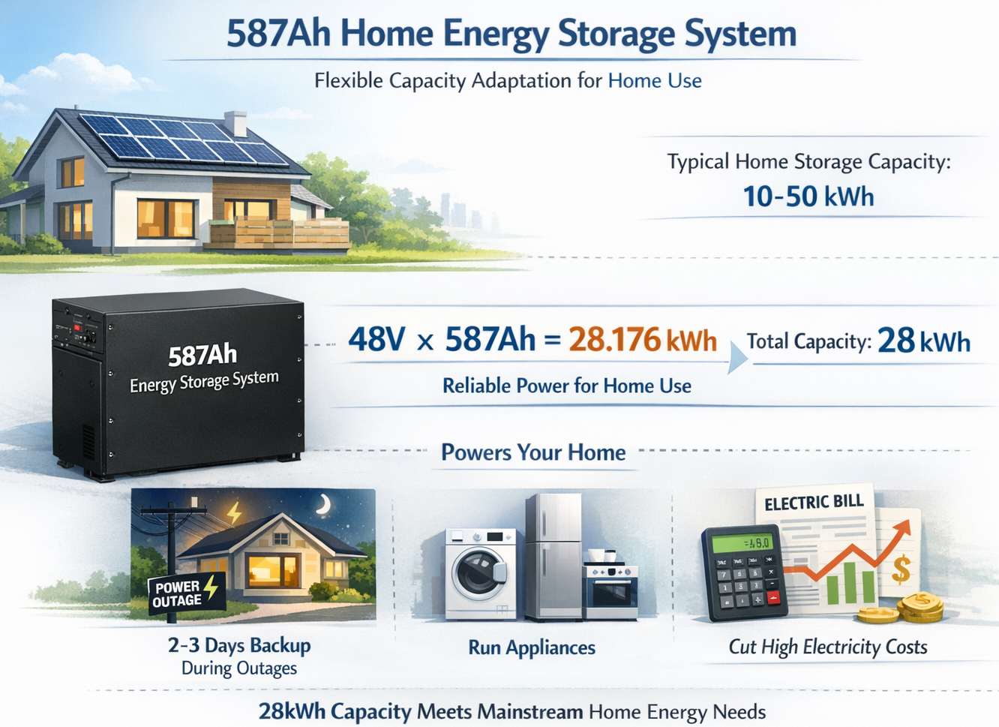
The technical advantages of the 587Ah energy storage system in home energy storage scenarios are mainly reflected in:
- Modular design advantages: 587Ah energy storage system adopts modular design concept, it can be flexibly configured according to the actual electricity needs of the household. A single 587Ah battery cell can form a 28.176kWh energy storage module, Multiple modules can be used in parallel to meet the energy storage needs of households of different sizes.
- High degree of system integration: The home energy storage system based on 587Ah cells integrates the battery management system (BMS), energy management system (EMS), and thermal management system for a highly integrated design. The system volume is reduced by 20%-40% compared with the traditional scheme, which is convenient for installation and layout in the home environment.
- Intelligent management ability: It support intelligent charging and discharging management, which can automatically adjust the charging and discharging strategy according to the grid electricity price, photovoltaic power generation and household electricity load. By integrating with smart home systems, intelligent scheduling and optimal control of electrical devices can be realized.
- Economic analysis: In home energy storage applications, the cost of electricity per kilowatt-hour of a 587Ah energy storage system is about USD: $0.07 – $0.13 per kWh. Considering the peak-to-valley electricity price difference and the proportion of photovoltaic power generation for self-consumption, household users can usually recover the investment cost within 5-7 years.
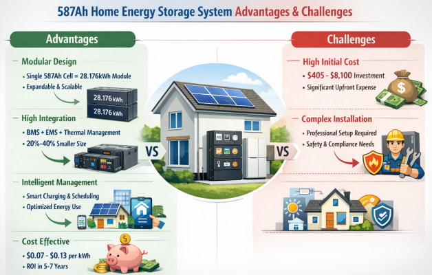
However, the 587Ah energy storage system also faces some challenges in home energy storage applications:
- Higher initial investment: Although 587Ah technology reduces system costs, However, the initial investment in home energy storage systems is still high. Taking the 28kWh system as an example, the total investment is about $405.29 USD-$8,105.78 USD, this is a big expense for ordinary families.
- Installation complexity: The 587Ah energy storage system requires professionals to install and debug, involving electrical safety, waterproof and fireproof and other technical requirements. Home users need to choose a qualified installation service provider, which increases the complexity of project implementation.
Application Scenarios of Industrial and Commercial Energy Storage
Industrial and commercial energy storage is one of the application areas with the most development potential of 587Ah energy storage system. The typical capacity requirements for industrial and commercial energy storage are 50-1000kWh. The 587Ah energy storage system demonstrates excellent performance in this scenario with its high energy density and long cycle life.
The core value of the 587Ah energy storage system in industrial and commercial energy storage scenarios is mainly reflected in:
- Peak and valley arbitrage function: The 587Ah energy storage system charges during the trough period of electricity prices, Discharge during peak electricity price hours to help industrial and commercial users achieve peak and valley arbitrage. High conversion efficiency (94.5%-96.5%) and long cycle life (8000-11000) of the system times) to ensure the long-term effectiveness of the arbitrage strategy.
- Demand Responsiveness: In the electricity demand response market, 587Ah Energy storage systems can quickly respond to grid dispatch commands, reducing power consumption or output during peak grid load hours. The system's millisecond response speed and high-power density make it ideal for demand response services.
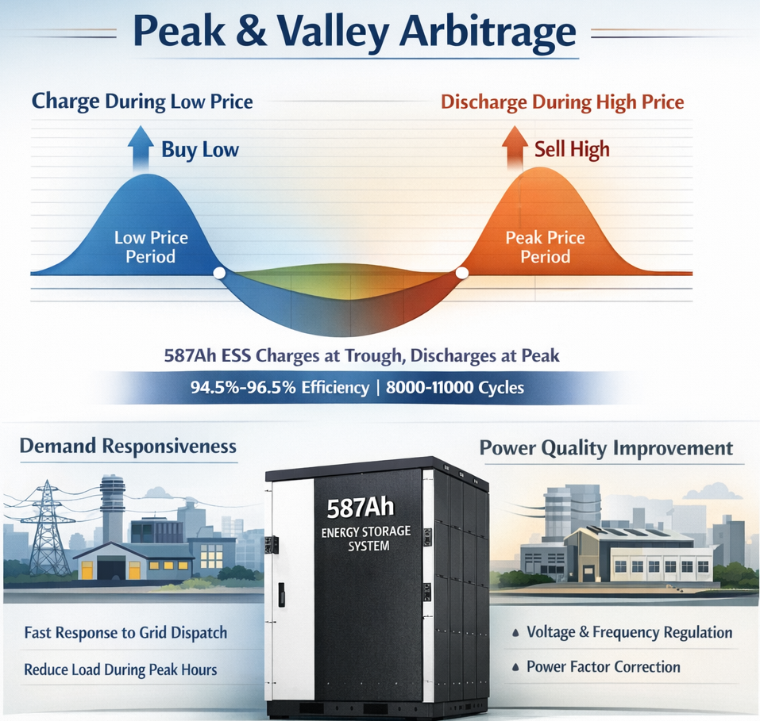
- Power quality improvement: 587Ah energy storage system can provide voltage support for industrial and commercial users; Power quality services such as frequency regulation and power factor correction improve power supply reliability and power equipment efficiency.
- Application case analysis: According to industry practice, 587Ah Energy storage systems have achieved remarkable results in industrial and commercial energy storage applications. For example, a data center uses a 587Ah energy storage system as a backup power source, which not only provides reliable power security, but also saves more than one million yuan in electricity bills every year through peak and valley arbitrage.
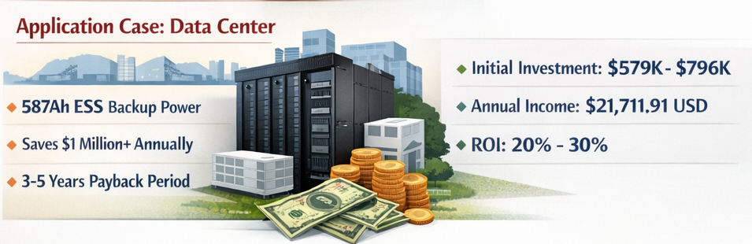
From an economic point of view, the payback period of industrial and commercial energy storage projects is usually 3-5 years. Take a 1MWh 587Ah energy storage system as an example, the initial investment is about $5.79 USD -$79,610 USD through peak-valley arbitrage and demand response services, the annual income can reach 🇺🇸 US Dollar $21711.91, ROI between 20% and 30%.
Application Scenarios of Grid-level Energy Storage
Grid-level energy storage is the most challenging and valuable application scenario for 587Ah energy storage systems. The capacity requirements for grid-level energy storage are usually above 1MWh, and large-scale projects can reach 100 MWh and even GWh level. The 587Ah energy storage system plays a pivotal role in grid-level energy storage due to its large capacity, high reliability, and longevity characteristics.
The technical advantages of the 587Ah energy storage system in grid-level energy storage scenarios include:
- Large-scale integration capabilities: Energy storage systems based on 587Ah cells can achieve large-scale integration, The capacity of a single container system reaches 6.25MWh, and multiple containers can form 100MWh even GWh level energy storage power station. For example, CATL's Tianheng system has a single cabinet capacity of 6.25MWh and a full container weight of 45 tons or less, meeting the transportation requirements.
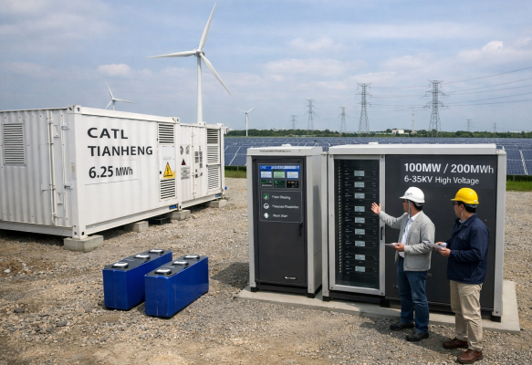
- Grid support function: The 587Ah energy storage system can provide a variety of auxiliary services for the power grid, including peak shaving, FM, standby and black start, etc. The system's high-power density and rapid response capabilities enable it to effectively support the stable operation of the power grid.
- New energy consumption improvement: In the new energy distribution and storage project, 587Ah Energy storage systems can significantly improve the consumption rate of new energy. Through the regulation of energy storage systems, the wind and photovoltaic power plants can reduce the wind and light abandonment rate of wind farms and photovoltaic power plants from more than 30% to 5% below.
- Technological innovation application: The third-generation cascade high-voltage large-capacity energy storage system jointly released by Zhiguang Energy Storage and Haichen Energy Storage is equipped with 587Ah Large-capacity battery to achieve a single machine capacity 100MW/200MWh, the system conversion efficiency exceeds 92%, and can be directly connected to high voltage 6~35KV power grid. This technological breakthrough marks a significant advancement in the application of 587Ah energy storage systems at the grid level.
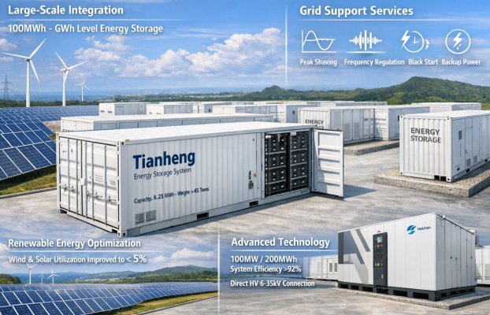
From the perspective of market application, the 587Ah energy storage system has been applied in many large-scale grid-level energy storage projects. For example, a wind, solar and storage integration base in Ningxia uses 500MWh built with 587Ah battery cells energy storage system, through CTP grouping technology to increase the energy density of the system to 185Wh/kg, The land utilization rate was optimized by 35%, and the night wind curtailment consumption rate jumped from 68% to 92%.
Cost Composition Analysis of 587Ah Energy Storage System
Composition of initial investment costs
The initial investment cost of the 587Ah energy storage system is complex, involving multiple core components and system integration expenses. According to industry data, the complete cost composition of energy storage systems is battery cells account for 60%, inverters (PCS) accounted for 15%, and other structural parts accounted for 25%.
The specific cost composition analysis is as follows:
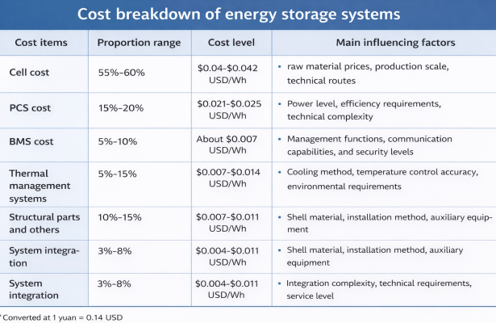
O&M cost analysis
The operation and maintenance costs of the 587Ah energy storage system mainly include manual maintenance costs, equipment replacement costs, energy consumption costs, and insurance costs. According to industry data, the operation and maintenance cost of user-side energy storage is about 0.04-0.08 yuan/ Wh, accounting for about 3%-10% of the total cost.
The specific components of O&M costs are as follows:
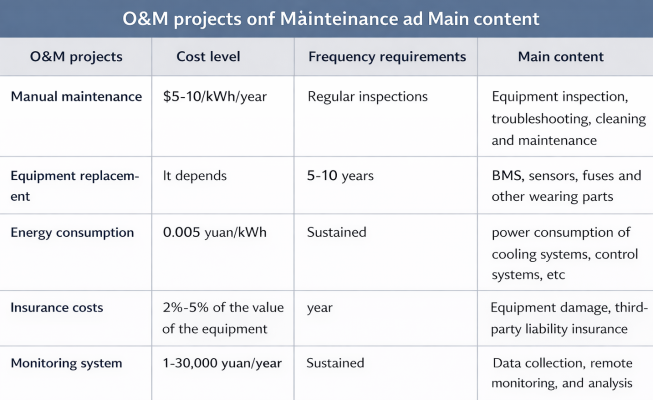
Full life cycle cost assessment
The full life cycle cost (LCC) is an important indicator for evaluating the economics of energy storage systems, including initial investment costs, operation and maintenance costs, replacement costs, and residual value. The cost of electricity per kilowatt-hour (LCOS) is a core metric for measuring the economics of energy storage systems, reflecting the full life cycle cost divided by the cumulative transmitted electrical energy.
Full life cycle cost analysis of 587Ah energy storage system:
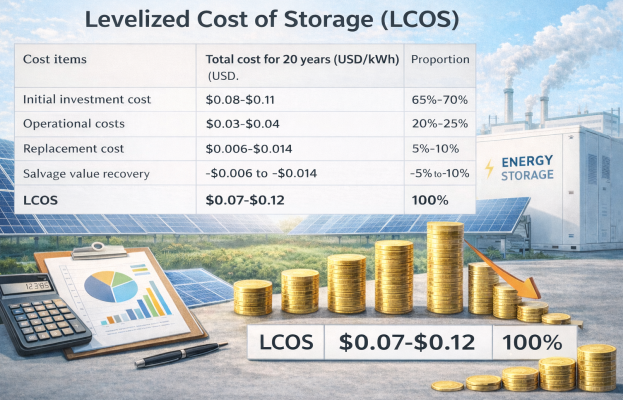
The development trend of the 587Ah energy storage system market
Market size and growth forecast
The 587Ah energy storage system market is in a stage of rapid development, and the market size is showing an explosive growth trend. The product penetration rate has exceeded 60%, and it is expected to reach 75%-80% throughout the year. There has been a general consensus in the industry that the next generation of mainstream battery cells will be 587Ah products with larger capacity and stronger performance.
From the perspective of the global market, the development of 587Ah energy storage system presents the following characteristics:
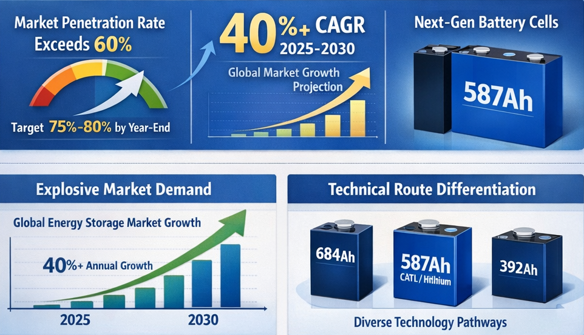
- Market demand explosion: As the global energy transition accelerates, the demand for energy storage market has shown explosive growth. Especially driven by the new energy distribution and storage policy, the demand for large-capacity battery cells in large-scale energy storage projects has increased sharply. It is expected that from 2025 to 2030, the global 587Ah energy storage system market will maintain an average annual growth rate of more than 40%.
- Technical route differentiation: The current energy storage cell technology route is significantly differentiated, forming 587Ah represented by CATL and Hithium Energy Storage, represented by Sungrow, 684Ah, and 392Ah transitional product represented by Ruipu Lanjun. The 587Ah has obvious advantages in terms of technology maturity and market recognition.
- Regional market differences: Differences in market demand and policy environments in different regions lead to 587Ah Energy storage systems are developing at different speeds. The Chinese market has become the main driving force for the development of 587Ah technology due to strong policy support and complete industrial chain. The European and American markets pay more attention to the safety and reliability of their products and are relatively cautious in accepting new technologies.
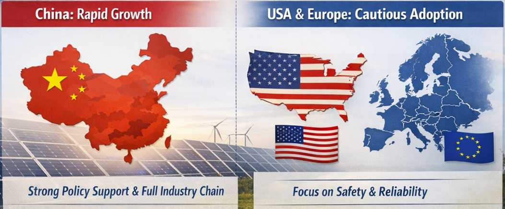
Technological development trends
The technological development of 587Ah energy storage system shows the following trends:
- Large-capacity evolution: From 314Ah to the technological evolution of the 587Ah is not a simple capacity amplification, but a system-level optimized design. In the future, there may be larger capacity battery cell specifications, but the development direction will pay more attention to the balance between system integration efficiency and cost control.
- Intelligent upgrade: The 587Ah energy storage system is developing in the direction of intelligence, integrating artificial intelligence algorithms, big data analysis, edge computing and other technologies. Intelligent BMS can achieve accurate prediction and optimal management of battery status, improving system safety and efficiency.
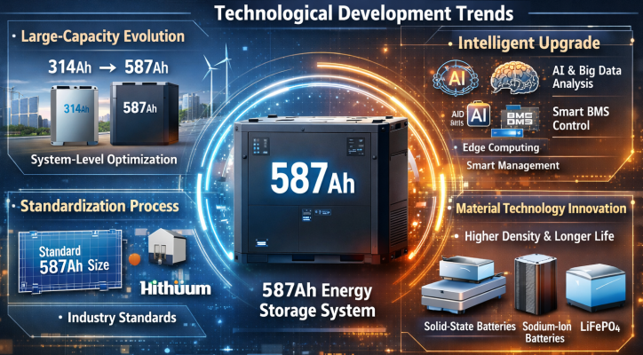
- Standardization process: As 587Ah technology matures, the industry standardization process is accelerating. Hithium Energy Storage and a number of industrial chain enterprises jointly define the size standard of 587Ah batteries, which helps reduce system integration costs and improve product compatibility.
- Material technology innovation: In terms of material technology, the 587Ah energy storage system is moving towards higher energy density, longer life and lower cost. The development of new technologies such as solid-state batteries and sodium-ion batteries may have an impact on the 587Ah technology route, but lithium iron phosphate will still be the mainstream technology in the short term.
Conclusion
Overall, the 587Ah energy storage system represents an important direction in the development of energy storage technology, with significant advantages in terms of technological advancement, market prospects, and investment value. With the continuous maturity of technology and the rapid development of the market, the 587Ah energy storage system is expected to become an important force in promoting the global energy transition and making important contributions to building a clean, efficient and sustainable energy system.